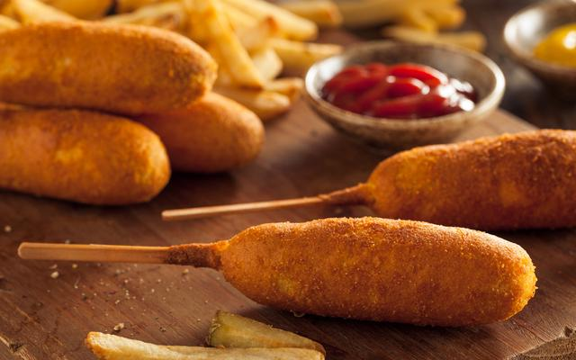

Corndog

O corndog é um espetinho de salsicha empanada com uma massa de milho dourada e crocante, tradicional da culinária americana.
Ingredients
- 1 1/2 xícaras (chá) de farinha de milho
- farinha de trigo
- 1/2 xícara (chá) de farinha de trigo
- 1 ovo
- 1/2 xícara(chá) de leite
- 1/4 xícara(chá) de açúcar
- 1/2 colher(sopa) de fermento químico
- 1/2 kg de salsichas
- Palitos de churrasco
- óleo
- 2 xícaras (chá) de óleo para fritar
Steps
- Em uma bacia coloque todos os ingredientes e misture até virar uma massa.
- Enxugue as salsichas e envolva cada uma na massa, apertando bem para não sair na hora de fritar.
- Enfiar o palito e fritar.
- Dica: colocar de molho os palitos na água.
Home